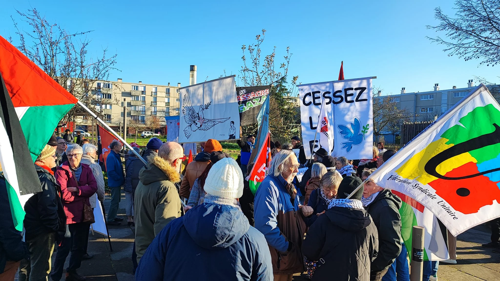
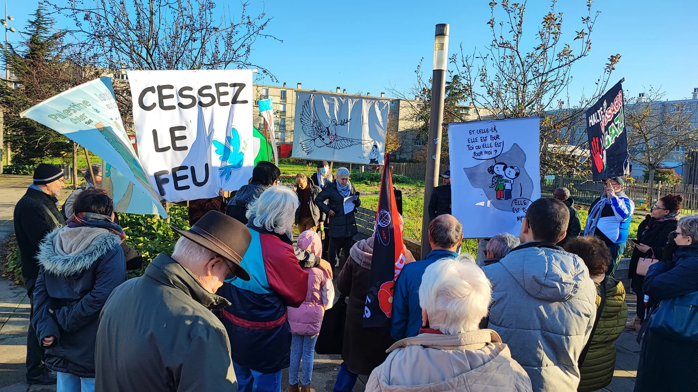
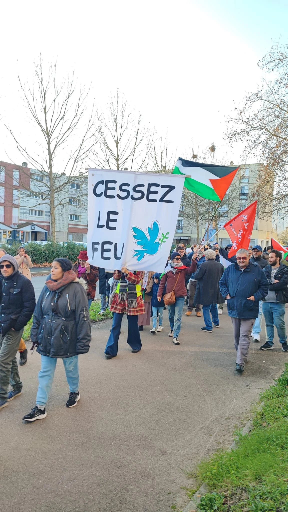
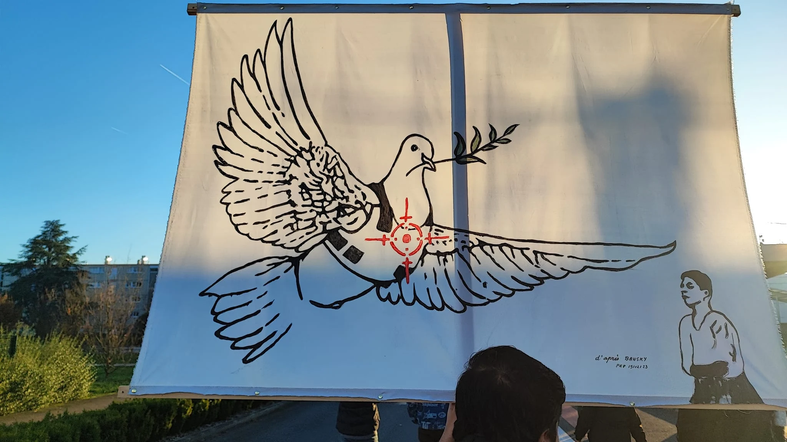

Compte rendu fédéral
À Niort, le 16 décembre, une marche pour le cessez-le-feu à Gaza
Date indiquée par Facebook · 17 décembre 2023
Repères éditoriaux
Notre publication du 17 décembre fait état d’une centaine de participants au rassemblement et à la marche de la veille. Quatre photos rendent compte de la mobilisation.
Texte conservé avec la publication
Samedi 16 à #Niort , une centaine de personnes a participé au rassemblement et à une marche pour demander un cessez-le-feu immédiat, la libération des otages et prisonniers, l'arrêt de la colonisation.
#paix
#CessezLeFeu
#Gaza
#Palestine




Sources
Archive rouge · export Facebook · AR-0002-FB-01521
À lire aussi · À Niort, appel au rassemblement du 16 décembre pour la Palestine